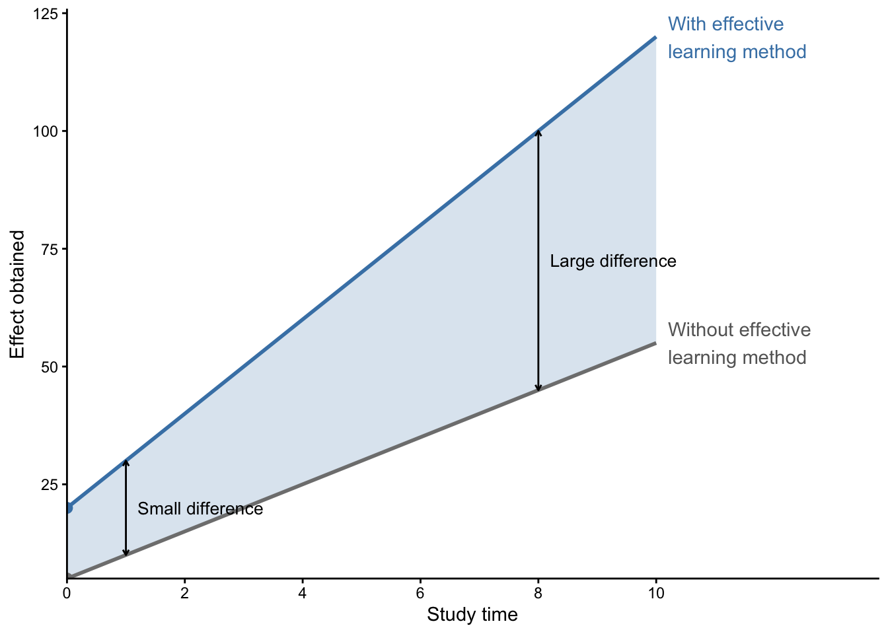
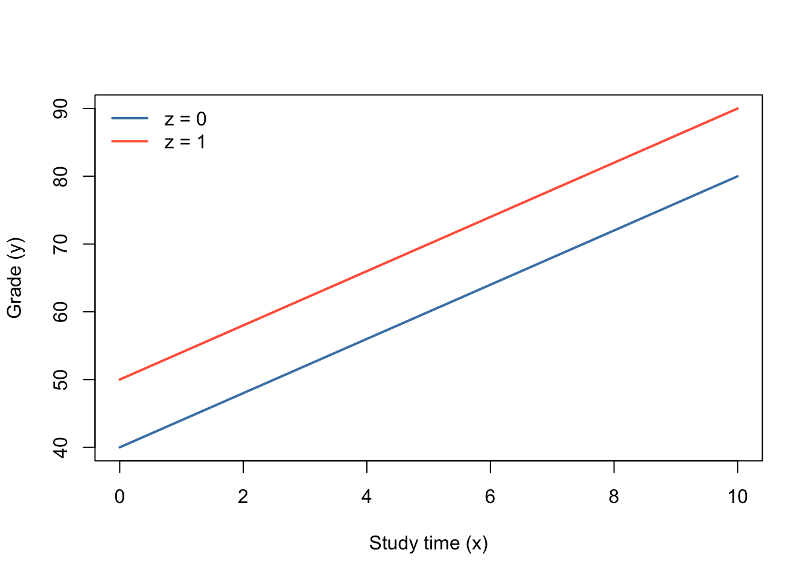
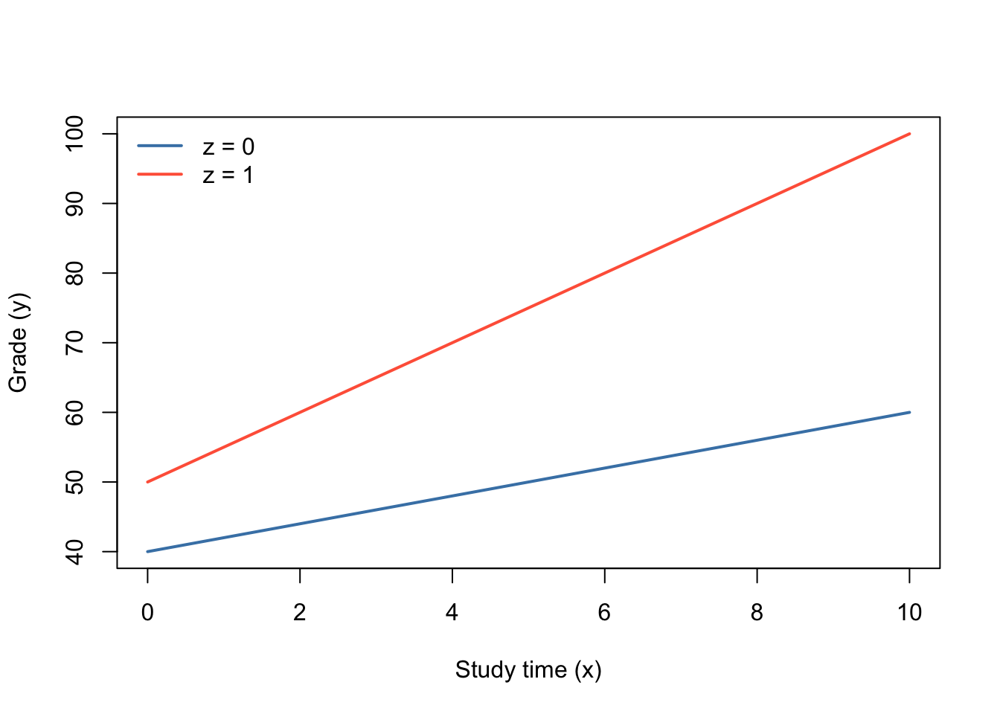
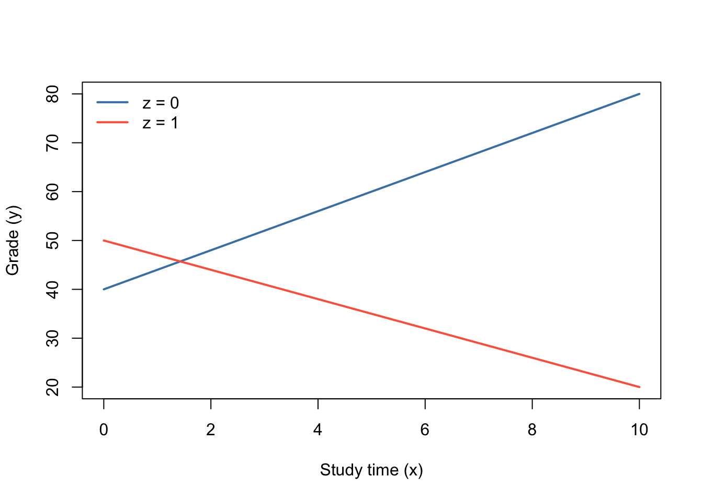
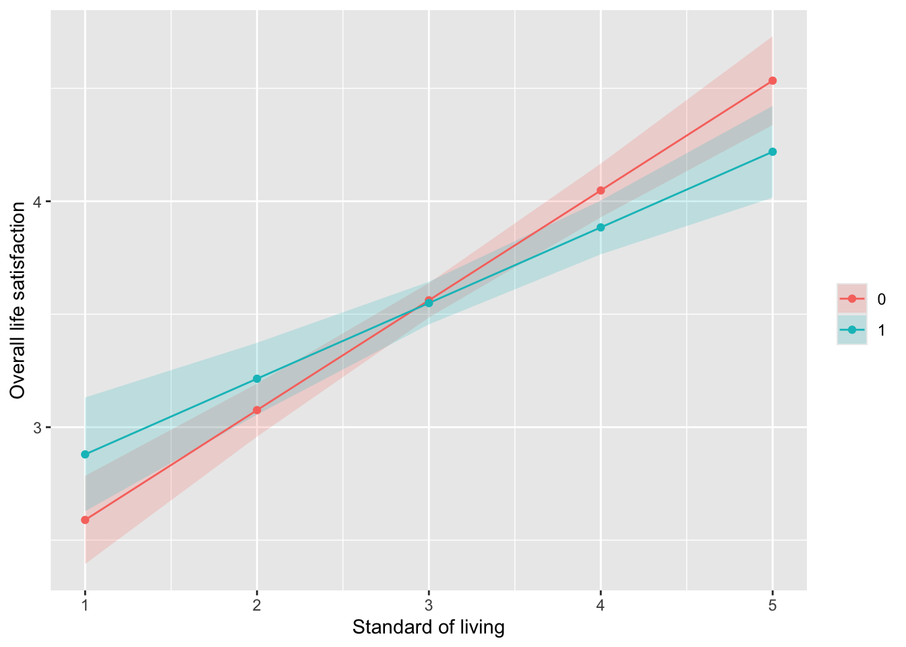
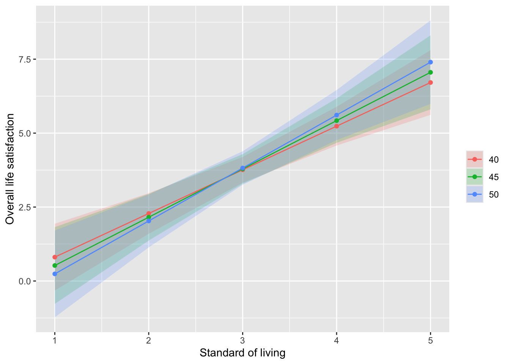

14 交互作用効果
14.1 交互作用効果とは
学習時間（\(x\)）が、成績（\(y\)）に対して与える影響について考えてみよう。この場合、学習時間が独立変数\(x\)であり、成績が従属変数\(y\)である。ここでは、学習時間の増加が成績をどの程度上昇させるのかを考えてみたい。この\(x\)と\(y\)の関連を図示すると以下のようになる。
しかし、学習時間は、「効果的な学習方法」を取り入れた場合に、より効果を持つかもしれない。つまり、「効果的な学習方法」を実行する個人では、そうでない個人よりも、長時間の学習によって得る効果は大きいかもしれない。これを図示すると以下のようになる。
これは、独立変数\(x\)（学習時間）が、従属変数\(y\)（成績）に対する影響が、調整変数\(z\)（学習方法）によって異なることを意味する。このように、独立変数\(x\)が持つ従属変数\(y\)に対して与える効果を変化させる変数を、調整変数と呼ぶ。このような、調整変数による効果を交互作用効果（interaction effect）と呼ぶ。図に示すと以下のようになる。
Noteグループ・ワーク
「u001」のうち、暮らしむき（ZQ12）を独立変数、生活全般満足度（ZQ30D）を従属変数としたとき、独立変数の効果を調整するとみられる、調整変数を考えてみよう。
14.2 交互作用効果の推定
では実際に、交互作用効果はどのように推定すれば良いのだろうか。交互作用効果は、以下のような式によって推定される。
\[y_i = b_0 + b_1x_i + b_2z_i + b_3x_iz_i + e_i\]
ここで、\(x_i\)は独立変数を、\(y_i\)は従属変数を示している。\(z_i\)が調整変数であり、\(b_3x_iz_i\)の箇所が交互作用効果である。
上式を少し変形させたものが以下の式である。
\[y_i = b_0 + (b_1 + b_3z_i)x_i + b_2z_i + e_i\]
先ほどの例だと、この式のうち\(z_i\)は「効果的な学習方法」を指す。では、\(z_i\)が、「効果的な学習方法」を実行している場合に1を、実行していない場合に0をとるダミー変数であると仮定しよう。すると、独立変数\(x_i\)（学習時間）が持つ効果は、この式のうち、どの部分になるだろうか。
\(z_i=0\)の場合（つまり「効果的な学習方法」を実行していない場合）の、\(x_i\)の効果量は、\(z_i=0\)を代入した場合の\(x_i\)の係数（\(=b_1\)）である。一方で、\(x_i=1\)の場合（つまり「効果的な学習方法」を実行している場合）の\(x_i\)の効果量は、\(z_i=1\)を代入した場合の\(x_i\)の係数（\(=b_1+b_3\)）である。つまり、調整変数の値によって、\(x_i\)の効果量は、\(b_3\)だけ異なることになる。調整変数\(z\)が\(0\)である場合の、独立変数の効果のことを、主効果と呼ぶ。
14.3 交互作用効果の種類
交互作用効果にはいくつかの種類がある。以下では、先ほど示した、学習時間（\(x\)）が成績（\(y\)）に与える影響における、学習方法（\(z\)）の調整効果について着目し、いくつかの相互作用の種類を説明する。
14.3.1 交互作用効果がない場合
調整変数（\(z\)）による調整効果がない状況とは、独立変数（\(x\)）が、従属変数（\(y\)）に対して与える効果が、調整変数（\(z\)）のとる値によって異ならないことを意味する。
例えば、学習時間\(x\)が成績\(y\)に与える効果に対して、ある学習方法\(z\)による調整効果がない状況を考えてみる。このとき、学習方法を実践している場合（\(z=1\)）と、学習方法を実践していない場合（\(z=0\)）とで、学習時間\(x\)の傾きが異ならない。図にすると以下の通りである。

ここでは、調整変数\(z\)の主効果は正となっている。つまり、ある学習方法を実践すること（\(z=1\)）は，実施しない場合と比較すると、平均的に（=切片は）高いが、学習時間\(x\)が成績\(y\)に与える影響は変化させない、ということである。
14.3.2 同じ方向の交互作用効果がある場合
調整変数\(z\)が調整効果を持つ場合、つまり、独立変数\(x\)と調整変数\(z\)の交互作用効果が存在する場合、調整変数\(z\)のとる値によって、独立変数\(x\)が従属変数\(y\)に対して与える条件付き効果が異なる。
例えば、ある学習方法\(z\)を実践すると（\(z=1\)）、学習がより効率的になるため、学習時間（\(x\)）の増加によって上昇する成績（\(y\)）の増加幅が大きくなるかもしれない。これを図に示すと以下のようになる。

この図が示しているように、効率的な学習方法を実践している場合（\(z=1\)）、そうでない場合（\(z=0\)）と比べ、学習時間\(x\)の増加によって、成績\(y\)がより上昇している（傾きが急）であることがわかる。
上に示した図は、調整変数\(z\)のとる値によって、独立変数\(x\)が従属変数\(y\)に対して与える条件付き効果の向きが変化しない場合の交互作用効果である。
14.3.3 逆の方向の交互作用効果がある場合
一方で、調整変数\(z\)によって、独立変数\(x\)の効果が正になったり負になったりする場合もある。例えば、ある学習方法\(z\)は，「悪い」学習方法であり、その学習方法を実践すると、学習時間\(x\)の増加に伴ってむしろ成績\(y\)が低下するような状況を想像してみよう。この場合を図に示すと、以下のようになる。

これは、逆の方向の交互作用効果がある例である。
14.4 交互作用効果の推定の例
では実際に、交互作用効果を推定してみよう。以下では、暮らしむき（ZQ12）を独立変数、生活全般満足度（ZQ30D）を従属変数、大卒以上ダミー（ZQ23A）を調整変数とした場合の推定の例である。
# 暮らしむき変数は、良いほど大きい値で、9=NAに置き換え
data4 |> count(ZQ12) ZQ12 n
1 1 81
2 2 143
3 3 601
4 4 131
5 5 40
6 9 4data14 <- data4 |>
mutate(living = ifelse(ZQ12==9, NA, 6-ZQ12))
data14 |> count(living) living n
1 1 40
2 2 131
3 3 601
4 4 143
5 5 81
6 NA 4# 生活全般満足度変数は、満足しているほど大きい値で、9=NAに置き換え
data4 |> count(ZQ30D) ZQ30D n
1 1 163
2 2 431
3 3 257
4 4 103
5 5 37
6 9 9data14 <- data14 |>
mutate(satisfaction = ifelse(ZQ30D==9, NA, 6-ZQ30D))
# 大卒以上ダミーは，ZQ23Aから作成
data4 |> count(ZQ23A) ZQ23A n
1 1 14
2 2 241
3 3 191
4 4 131
5 5 368
6 6 44
7 7 2
8 9 9data14 <- data14 |>
mutate(bachelor = case_when(ZQ23A <= 4 ~ 0,
ZQ23A <= 6 ~ 1,
TRUE ~ NA))交互作用効果を推定するためには、通常の回帰分析のコマンド（lm()）を使用すれば良い。推定結果は、わかりやすくmsummary()でまとめる。
lm(satisfaction ~ living + bachelor + living*bachelor, data = data14) |> msummary(stars = TRUE)| (1) | |
|---|---|
| + p < 0.1, * p < 0.05, ** p < 0.01, *** p < 0.001 | |
| (Intercept) | 2.103*** |
| (0.143) | |
| living | 0.486*** |
| (0.046) | |
| bachelor | 0.441+ |
| (0.229) | |
| living × bachelor | -0.151* |
| (0.070) | |
| Num.Obs. | 982 |
| R2 | 0.135 |
| R2 Adj. | 0.133 |
| AIC | 2655.7 |
| BIC | 2680.1 |
| Log.Lik. | -1322.850 |
| F | 50.991 |
| RMSE | 0.93 |
推定結果を確認すると、大卒以上（bachelor）の主効果は5%水準で統計的に非有意である。つまり、「大卒以上とそれ以外とでは、従属変数（生活全般満足度）に違いがない」。また、暮らしむき（living）の主効果は，5%水準で統計的に正に有意である。つまり、「暮らしむきが高いほど、従属変数（生活全般満足度）は高い」といえる。
それでは、これらの交互作用効果を確認しよう。暮らしむきと大卒以上ダミーとの交互作用効果は、統計的に有意な負の効果を持っている。つまり、「大卒以上では、暮らしむきが生活全般満足度に対して与える正の効果は、それ以外の学歴を持つ場合よりも弱くなる」といえる。
Noteグループ・ワーク
「u001」のうち、皆さんの関心に従って、独立変数・従属変数・調整変数を設定し、実際に交互作用効果を推定してみよう。
14.5 交互作用効果の可視化
調整変数\(z\)が、実際に独立変数\(x\)と従属変数\(y\)の関連をどのように調整するのかは，交互作用効果の結果からではしばしばわかりにくい場合がある。そのような場合、交互作用効果を持つ変数間の関連を可視化することで、より深い理解を得ることができる。
14.5.1 予測値
まず、回期分析の結果から、独立変数\(x\)の取りうる値によって、従属変数\(y\)がどのような値を取りうるかという、予測値を計算することができる。Rでは、marginaleffectsパッケージのpredictions()を使用して、以下のようにして計算できる。
# まず、回帰分析の結果を、何らかのオブジェクトに格納
result1 <- lm(satisfaction ~ living + bachelor + living*bachelor, data = data14)
# marginaleffectsパッケージをインストールしてlibraryする
#installed.packages("marginaleffects")
library(marginaleffects)
# predictions()を使用して、予測値を計算
prediction1 <- predictions(result1,
newdata = datagrid(living = c(1:5),
bachelor = (0:1)))
prediction1
living bachelor Estimate Std. Error z Pr(>|z|) S 2.5 % 97.5 %
1 0 2.59 0.0995 26.0 <0.001 493.3 2.39 2.78
1 1 2.88 0.1285 22.4 <0.001 367.1 2.63 3.13
2 0 3.08 0.0600 51.3 <0.001 Inf 2.96 3.19
2 1 3.21 0.0812 39.6 <0.001 Inf 3.06 3.37
3 0 3.56 0.0389 91.5 <0.001 Inf 3.49 3.64
3 1 3.55 0.0481 73.8 <0.001 Inf 3.46 3.64
4 0 4.05 0.0606 66.8 <0.001 Inf 3.93 4.17
4 1 3.88 0.0608 63.8 <0.001 Inf 3.77 4.00
5 0 4.53 0.1003 45.2 <0.001 Inf 4.34 4.73
5 1 4.22 0.1037 40.7 <0.001 Inf 4.02 4.42
Type: response predictions()の第1引数にはlm()の推定結果を格納する。第2引数として、newdata = datagrid()と指定されているが、これはdatagrid()の中に、説明変数と調整変数のとる値を指定している。ここで指定された値の範囲で、予測値が計算される。
predictions()の結果を確認してみよう。「prediction1」の中身を確認してみると、“living”が1~5まで、bachelorが0,1を取る場合の、従属変数の予測値が、“Estimate”に格納されている。これが、独立変数・調整変数がとるそれぞれの値における、従属変数の予測値である。また、“Std. Error”は標準誤差を意味する。当然、これだけでは視覚的にわかりにくいので、続いてここからグラフを作成してみる。
グラフの作成には、ggplot2パッケージのggplot()関数を使用する。
# まず、prediction1をデータフレームにする
prediction1_df <- data.frame(prediction1)
prediction1_df rowid estimate std.error statistic p.value s.value conf.low
1 1 2.589421 0.09953281 26.01576 3.285255e-149 493.2513 2.394341
2 2 2.879623 0.12850246 22.40909 3.209303e-111 367.0518 2.627763
3 3 3.075574 0.05995629 51.29693 0.000000e+00 Inf 2.958062
4 4 3.214529 0.08115259 39.61093 0.000000e+00 Inf 3.055473
5 5 3.561726 0.03892722 91.49707 0.000000e+00 Inf 3.485430
6 6 3.549436 0.04811869 73.76417 0.000000e+00 Inf 3.455125
7 7 4.047878 0.06056810 66.83185 0.000000e+00 Inf 3.929167
8 8 3.884342 0.06084308 63.84197 0.000000e+00 Inf 3.765092
9 9 4.534031 0.10027092 45.21780 0.000000e+00 Inf 4.337503
10 10 4.219248 0.10365884 40.70321 0.000000e+00 Inf 4.016081
conf.high satisfaction living bachelor df
1 2.784502 4 1 0 Inf
2 3.131483 4 1 1 Inf
3 3.193086 4 2 0 Inf
4 3.373586 4 2 1 Inf
5 3.638022 4 3 0 Inf
6 3.643747 4 3 1 Inf
7 4.166590 4 4 0 Inf
8 4.003592 4 4 1 Inf
9 4.730558 4 5 0 Inf
10 4.422416 4 5 1 Inf# データフレームにしたprediction1_dfに対して、ggplotでグラフを作成
prediction1_df |>
mutate(bachelor = factor(bachelor)) |> # 先に、bachelorを質的変数に指定
ggplot(aes(x = living, y = estimate,
color = bachelor, fill = bachelor, group = bachelor)) + # 縦・横軸・グループを指定
geom_ribbon(aes(ymin = conf.low, ymax = conf.high),
alpha = 0.2, color = NA) + # 95％信頼区間を色付け
geom_line() + # 横線で結ぶ
geom_point() + # 点を打つ
labs(x = "Standard of living", y = "Overall life satisfaction",
fill = "", color = "") # 軸のラベルを付与
作成されたグラフは、\(x\)軸が暮らしむき（独立変数）、\(y\)軸が生活全般満足度（従属変数）を意味する。さらに重要な点は、赤と青の2つの実線が引かれていることである。凡例を確認すると、赤が\(z=0\)、青が\(z=1\)を意味していることがわかる。つまり、赤線は、大卒以上の集団における予測値、青線は大卒以上の集団における予測値を意味している。上で推定した交互作用効果は、5%水準で統計的に有意な負の効果を持っていた。つまり、「大卒以上の集団では、暮らしむきが生活全般満足度に与える正の影響が弱い」ということがいえ、これはグラフからも読み取れるだろう。
14.5.2 量的変数どうしの交互作用効果
調整変数\(z\)に、量的変数を投入することも可能である。たとえば、先ほどの例で使用した、暮らしむき（独立変数）が、生活全般満足度（従属変数）に与える影響に対して、年齢が与える調整効果を考えてみよう。
# 年齢変数の元になる、ybirth（出生年）を確認
data14 |> count(ybirth) ybirth n
1 1972 70
2 1973 81
3 1974 82
4 1975 70
5 1976 76
6 1977 84
7 1978 53
8 1979 54
9 1980 48
10 1981 70
11 1982 44
12 1983 67
13 1984 67
14 1985 64
15 1986 70# まずは、ybirth（出生年）から年齢変数（gae）を算出する
# 現在は2026年なので、2026-ybirthで、おおよその年齢を算出する
data14 <- data14 |>
mutate(age = 2026 - ybirth)
data14 |> count(ybirth, age) ybirth age n
1 1972 54 70
2 1973 53 81
3 1974 52 82
4 1975 51 70
5 1976 50 76
6 1977 49 84
7 1978 48 53
8 1979 47 54
9 1980 46 48
10 1981 45 70
11 1982 44 44
12 1983 43 67
13 1984 42 67
14 1985 41 64
15 1986 40 70# とりあえず、このage変数をそのまま調整変数として投入してみる
lm(satisfaction ~ living + age + living*age, data = data14) |> msummary(stars = TRUE)| (1) | |
|---|---|
| + p < 0.1, * p < 0.05, ** p < 0.01, *** p < 0.001 | |
| (Intercept) | 6.378*** |
| (1.171) | |
| living | -1.035** |
| (0.363) | |
| age | -0.088*** |
| (0.025) | |
| living × age | 0.031*** |
| (0.008) | |
| Num.Obs. | 988 |
| R2 | 0.149 |
| R2 Adj. | 0.146 |
| AIC | 2658.3 |
| BIC | 2682.8 |
| Log.Lik. | -1324.162 |
| F | 57.407 |
| RMSE | 0.92 |
これで、ひとまずは推定ができた。暮らしむき、年齢の主効果、暮らしむき×年齢の交互作用効果はすべて統計的に有意である。しかし、よく見てみると、暮らしむきの主効果は負に有意である。上で推定した分析結果と異なる結果であるし、「暮らしむきがよくなるほど、生活全般満足度が悪くなる」というのは、あまり常識的な結果ではない。なぜ、このような結果になってしまうのだろう。
これを考えるために、交互作用効果を含む回帰式を再度確認してみよう。
\[y_i = b_0 + b_1x_i + b_2z_i + b_3x_iz_i + e_i\] ここで、\(x\)の主効果\(b_1\)は、調整変数\(z=0\)である場合の、独立変数\(x\)の効果を意味する。さて、先ほどの例では、調整変数\(z\)は年齢を意味していた。調査のサンプル上では、\(40 \leq z \leq 54\)であったが、先ほどのモデルにおける\(x\)の主効果は、この年齢\(z\)が0の場合、つまり年齢が0歳の時の\(x\)の効果量を意味している。0歳の場合の効果を推定することには特に意味はないはずなので、以下のように40歳を0歳として処理するか、多くの場合は標準化した上で回帰モデルに投入することが多い。
data14 <- data14 |>
mutate(age2 = age - 40)
data14 |> count(age, age2) age age2 n
1 40 0 70
2 41 1 64
3 42 2 67
4 43 3 67
5 44 4 44
6 45 5 70
7 46 6 48
8 47 7 54
9 48 8 53
10 49 9 84
11 50 10 76
12 51 11 70
13 52 12 82
14 53 13 81
15 54 14 70lm(satisfaction ~ living + age2 + living*age2, data = data14) |> msummary(stars = TRUE)| (1) | |
|---|---|
| + p < 0.1, * p < 0.05, ** p < 0.01, *** p < 0.001 | |
| (Intercept) | 2.854*** |
| (0.207) | |
| living | 0.220*** |
| (0.062) | |
| age2 | -0.088*** |
| (0.025) | |
| living × age2 | 0.031*** |
| (0.008) | |
| Num.Obs. | 988 |
| R2 | 0.149 |
| R2 Adj. | 0.146 |
| AIC | 2658.3 |
| BIC | 2682.8 |
| Log.Lik. | -1324.162 |
| F | 57.407 |
| RMSE | 0.92 |
このモデルにおける独立変数\(x\)の主効果は、40歳の場合の効果を意味する。
では続いて、先ほどと同様に、予測値をプロットしてみよう。
result2 <- lm(satisfaction ~ living + age2 + living*age2, data = data14)
prediction2 <- predictions(result2,
newdata = datagrid(living = c(1:5),
age2 = c(40,45,50)))
prediction2_df <- data.frame(prediction2)
prediction2_df |>
mutate(age2 = factor(age2)) |>
ggplot(aes(x = living, y = estimate,
color = age2, fill = age2, group = age2)) +
geom_ribbon(aes(ymin = conf.low, ymax = conf.high),
alpha = 0.2, color = NA) +
geom_line() +
geom_point() +
labs(x = "Standard of living", y = "Overall life satisfaction",
fill = "", color = "")
Noteグループ・ワーク
「u001」のうち、皆さんの関心に従って、独立変数・従属変数・調整変数を設定し、実際に交互作用効果を推定し、その結果をプロットしてみよう。